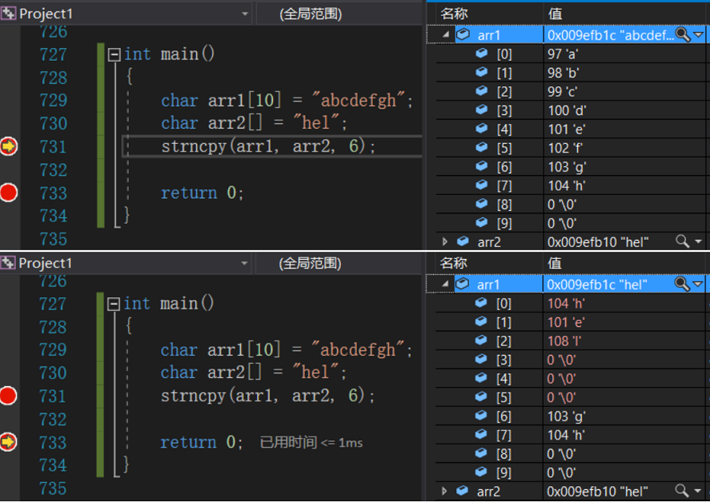
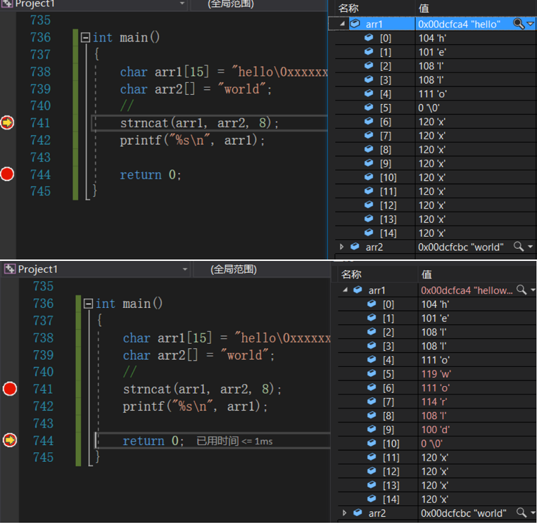

函数介绍
求字符串长度
strlen长度不受限制的字符串函数
strcpy strcat strcmp长度受限制的字符串函数介绍
strncpy strncat strncmp字符串查找
strstr strtok错误信息报告
strerror字符操作
内存操作函数
memcpy memmove memset memcmp
求字符串长度
strlen-获取字符串长度
size_t strlen ( const char * str );
//size_t== unsigned int，是无符号的（ 易错 ）
- 字符串已经’\0’作为结束标志，
- strlen函数返回的是在字符串中’\0’前面出现的字符个数（不包含 ‘\0’ )。
- 参数指向的字符串必须要以 ‘\0’ 结束。
strlen函数的模拟实现
- 计数器方式
- 不能创建临时变量计数器
- 指针-指针的方式
int my_strlen(const char *str) //库里返回的是无符号数
{
//法一：记数方式
int count = 0;
while (*str != "\0") //while(*str)
{
{
count++;
str++;
}
return count;
//法二：递归方式
// if (*str == '\0') //*str就是字符
// return 0;
// else
// return 1 + my_strlen(str + 1); //str +1 是str的下一个地址
//法三：指针方式
// char* start = str;
// char* end = str;
// while (*end != '\0')
// {
// end++;
// }
// return end - start;//
}
int main()
{
int len = my_strlen("abcdef");
//错误示范
//char arr[] = { 'a', 'b', 'c', 'd', 'e', 'f' };
//int len = my_strlen(arr);
printf("%d\n", len);
//3 - 6 = -3 无符号数
if (my_strlen("abc") - my_strlen("abcdef") > 0)
{
printf("hehe\n");//hehe
}
else
{
printf("haha\n");
}
return 0;
}
长度不受限制的字符串函数
strcpy-复制字符串
char* strcpy(char * destination, const char * source );
- 源字符串必须以 ‘\0’ 结束。
- 会将源字符串中的 ‘\0’ 拷贝到目标空间。
- 目标空间必须足够大，以确保能存放源字符串。
- 目标空间必须可变。
strcpy函数的模拟实现
- 参数顺序
- 函数的功能，停止条件
- assert
- const修饰指针
- 函数返回值
- 题目出自《高质量C/C++编程》书籍最后的试题部分
char* my_strcpy(char* dest, const char*src)
{
assert(dest != NULL);
assert(src != NULL);
char* ret = dest;
//拷贝src指向的字符串到dest指向的空间，包含'\0'
while (*dest++ = *src++)
{
;
}
//返回目的空间的起始地址
return ret;
}
int main()
{
char arr1[] = "abcdefghi";//2
//错误的示范
// char *arr1 = "abcdefghi";//arr1是常量字符串，不能更改
char arr2[] = "bit";//4
//错误的示范
//char arr2[] = { 'b', 'i', 't' };
my_strcpy(arr1, arr2);
printf("%s\n", arr1);
return 0;
}
strcat-追加字符串
char * strcat ( char * destination, const char * source );
- 源字符串必须以 ‘\0’ 结束。
- 目标空间必须有足够的大，能容纳下源字符串的内容。
- 目标空间必须可修改。
strcat函数的模拟实现
char *my_strcat(char *dest, const char *src)
{
char *ret = dest;
assert(dest != NULL);
assert(src);
//1. 找到目的字符串的'\0'
while (*dest != '\0')
{
dest++;
}
//2. 追加
while (*dest++ = *src++)
{
;
}
return ret;
}
int main()
{
// char arr1[] = "hello";err 空间不够，会造成越界访问
char arr1[30] = "hello";
char arr2[] = "world";
my_strcat(arr1, arr2);
printf("%s\n", arr1);
return 0;
}
strcmp-比较两个字符串
int strcmp (const char * str1, const char * str2 );
标准规定：
- 第一个字符串大于第二个字符串，则返回大于0的数字
- 第一个字符串等于第二个字符串，则返回0
- 第一个字符串小于第二个字符串，则返回小于0的数字
//VS2013
//> 1
//== 0
//< -1
//linux-gcc
//> >0
//== 0
//< <0
char *p1 = "qbc"; //6
char *p2 = "abc"; //5
//int ret = strcmp(p1, p2);
//printf("%d\n", ret);
if (strcmp(p1, p2) > 0)
{
printf("p1>p2\n");
}
else if (strcmp(p1, p2) == 0)
{
printf("pa == p2\n");
}
else if (strcmp(p1, p2) < 0)
{
printf("p1<p2\n");
}
strcmp函数的模拟实现
int my_strcmp(const char* str1, const char* str2)
{
assert(str1 && str2);
//比较
while (*str1 == *str2)
{
if (*str1 == '\0')
{
return 0;//相等
}
str1++;
str2++;
}
//if (*str1 > *str2)
// return 1;//大于
// else
// return -1;//小于
return (*str1 - *str2);//linux gcc
}
int main()
{
char* p1 = "abcdef";
char* p2 = "qwert";
int ret = my_strcmp(p1, p2);
printf("ret = %d\n", ret);
return 0;
}
长度受限制的字符串函数介绍
strncpy-拷贝n个字符
char * strncpy ( char * destination, const char * source, size_t num );
- 拷贝num个字符从源字符串到目标空间。
- 如果源字符串的长度小于num，则拷贝完源字符串之后，在目标的后边追加0，直到num个。

strncat-追加n个字符
char * strncat ( char * destination, const char * source, size_t num );

strncmp-比较前n个字符的两个字符串
int strncmp ( const char * str1, const char * str2, size_t num );
- 比较到出现另个字符不一样或者一个字符串结束或者num个字符全部比较完。
//strncmp - 字符串比较
const char* p1 = "abczdef";//常量字符串
char* p2 = "abcqwer";
//int ret = strcmp(p1, p2);
int ret = strncmp(p1, p2, 4);
printf("%d\n", ret);//1
字符串查找
strstr-查找字符串
char * strstr ( const char *, const char * );
strstr函数模拟实现
#include <assert.h>
//还有KMP 算法
char* my_strstr(const char* p1, const char* p2)
{
assert(p1 != NULL);
assert(p2 != NULL);
char *s1 = NULL;
char *s2 = NULL;
char *cur = (char*)p1;
if (*p2 == '\0')
{
return (char*)p1;
}
while (*cur)
{
s1 = cur;
s2 = (char*)p2;
while (*s1 && *s2 && (*s1 == *s2))
//while((*s1!='\0') && (*s2!='\0') && (*s1 == *s2))
{
s1++;
s2++;
}
if (*s2 == '\0')
{
return cur;//找到子串
}
if (*s1 == '\0')
{
return NULL;//找不到子串 s1<s2
}
cur++;
}
return NULL;//找不到子串
}
int main()
{
char *p1 = "abc";
char *p2 = "abcdef";
char* ret = my_strstr(p1, p2);
if (ret == NULL)
{
printf("子串不存在\n");
}
else
{
printf("%s\n", ret);
}
return 0;
}
strtok-分割字符串
char * strtok ( char * str, const char * sep );
- sep参数是个字符串，定义了用作分隔符的字符集合。
- 第一个参数指定一个字符串，它包含了0个或者多个由sep字符串中一个或者多个分隔符分割的标记。
- strtok函数找到str中的下一个标记，并将其用 \0 结尾，返回一个指向这个标记的指针。 （注：strtok函数会改变被操作的字符串，所以在使用strtok函数切分的字符串一般都是临时拷贝的内容并且可修改。）
- strtok函数的第一个参数不为 NULL ，函数将找到str中第一个标记，strtok函数将保存它在字符串中的位置。
- strtok函数的第一个参数为 NULL ，函数将在同一个字符串中被保存的位置开始，查找下一个标记。 如果字符串中不存在更多的标记，则返回 NULL 指针。
int main()
{
//192.168.31.121 .
//192 168 31 121 - strtok
////ip地址的表达方式:点分十进制的表示方式
/*char arr[] = "123@234.@234";
char*p = "@.";*/
//tgenkidu@qq.com @.
//tgenkidu qq com
char arr[] = "tgenkidu@qq.com";
char*p = "@.";
//tgenkidu\0163.com
char buf[1024] = { 0 };
strcpy(buf, arr);//将数据拷贝一份，处理arr数组的内容
//切割buf中的字符串
char* ret = NULL;
for (ret = strtok(arr, p); ret != NULL; ret=strtok(NULL, p))
{
printf("%s\n", ret);
}
//char*ret = strtok(arr, p);
//printf("%s\n", ret);
//ret = strtok(NULL, p);
//printf("%s\n", ret);
//ret = strtok(NULL, p);
//printf("%s\n", ret);
return 0;
}
错误信息报告
strerror-获取错误信息
char * strerror ( int errnum );
- 返回错误码，所对应的错误信息。
#include <stdio.h>
#include <string.h>
#include <errno.h>//必须包含的头文件
int main()
{
//错误码 错误信息
//0 - No error
//1 - Operation not permitted
//2 - No such file or directory
//...
//errno 是一个全局的错误码的变量
//当C语言的库函数在执行过程中，发生了错误，就会把对应的错误码，赋值到errno中
//char*str = strerror(errno);
//printf("%s\n", str);
//打开文件
FILE* pf = fopen("test.txt", "r");
if (pf == NULL)
{
printf("%s\n", strerror(errno));
}
else
{
printf("open file success\n");
}
return 0;
}
字符操作
字符分类函数
| 函数 | 如果他的参数符合下列条件就返回真 |
|---|---|
| iscntrl | 任何控制字符 |
| isspace | 空白字符：空格‘ ’，换页‘\f’，换行’\n’，回车‘\r’，制表符’\t’或者垂直制表符’\v’ |
| isdigit | 十进制数字 0~9 |
| isxdigit | 十六进制数字，包括所有十进制数字，小写字母a~f，大写字母A~F |
| islower | 小写字母a~z |
| isupper | 大写字母A~Z |
| isalpha | 字母a~z或A~Z |
| isalnum | 字母或者数字，a~z,A~Z,0~9 |
| ispunct | 标点符号，任何不属于数字或者字母的图形字符（可打印） |
| isgraph | 任何图形字符 |
| isprint | 任何可打印字符，包括图形字符和空白字符 |
#include <ctype.h>
int main()
{
char ch = '2';
//int ret = islower(ch);//
int ret = isdigit(ch);//
printf("%d\n", ret);
return 0;
}
字符转换函数
int tolower ( int c );
int toupper ( int c );
#include <ctype.h>
int main()
{
// char ch = tolower('q');
// char ch = toupper('q');
// putchar(ch);
char arr[] = "I Am A Student";
int i = 0;
while (arr[i])
{
if (isupper(arr[i]))
{
arr[i] = tolower(arr[i]);
}
i++;
}
printf("%s\n", arr);//i am a student
return 0;
}
内存操作函数
memcpy-内存拷贝
void * memcpy ( void * destination, const void * source, size_t num );
- 函数memcpy从source的位置开始向后复制num个字节的数据到destination的内存位置。
- 这个函数在遇到 ‘\0’ 的时候并不会停下来。
- 如果source和destination有任何的重叠，复制的结果都是未定义的。
memcpy函数的模拟实现
void* my_memcpy(void* dest, const void* src, size_t num)
{
void* ret = dest;
assert(dest != NULL);
assert(src != NULL);
while (num--)
{
*(char*)dest = *(char*)src;
++(char*)dest;
++(char*)src;
}
return ret;
}
int main()
{
int arr[] = { 1, 2, 3, 4, 5, 6, 7, 8, 9, 10 };
int i = 0;
my_memcpy(arr+2, arr, 20);
//memmove(arr + 2, arr, 20);//处理内存重叠的情况的
for (i = 0; i < 10; i++)
{
printf("%d ", arr[i]);
}
return 0;
}
memmove-内存移动
void * memmove ( void * destination, const void * source, size_t num );
- 和memcpy的差别就是memmove函数处理的源内存块和目标内存块是可以重叠的。
- 如果源空间和目标空间出现重叠，就得使用memmove函数处理。
C语言标准：
- memcpy 只要处理 不重叠的内存拷贝就可以 - 60 - 100
- memmove 处理重叠内存的拷贝 - 100
memmove函数的模拟实现
void* my_memmove(void* dest, const void*src, size_t count)
{
void* ret = dest;
assert(dest != NULL);
assert(src != NULL);
if (dest < src)
{
//前->后
while (count--)
{
*(char*)dest = *(char*)src;
++(char*)dest;
++(char*)src;
}
}
else
{
//后->前
while (count--)
{
*((char*)dest + count) = *((char*)src + count);
}
}
return ret;
}
int main()
{
//int arr1[] = { 1, 2, 3, 4, 5 };
//int arr2[10] = { 0 };
//arr1中的数字拷贝到arr2中
//my_memcpy(arr2, arr1, sizeof(arr1));
// 1 2 1 2 3 4 5 8 9 10
int arr3[] = { 1, 2, 3, 4, 5, 6, 7, 8, 9, 10 };
my_memmove(arr3, arr3+2, 20);
//my_memcpy不能胜任重叠拷贝的
//my_memcpy(arr3+2, arr3, 20);
//memmove可以胜任内存的重叠拷贝
//memmove(arr3+2, arr3, 20);
//C语言标准说：memcpy函数可以拷贝不重叠的就可以了
//当下发现：VS2013/vs2017环境下的memcpy可以处理重叠拷贝
//memcpy(arr3+2, arr3, 20);
return 0;
}
memcmp-内存比较
int memcmp ( const void * ptr1, const void * ptr2, size_t num );
- 比较从ptr1和ptr2指针开始的num个字节
标准规定：
第一个字段大于第二个字段，则返回大于0的数字 第一个字段等于第二个字段，则返回0 第一个字段小于第二个字段，则返回小于0的数字
//01 00 00 00 02 00 00 00 03 00 00 00 ...
//01 00 00 00 02 00 00 00 05 00 00 00 ...
int arr1[] = { 1, 2, 3, 4, 5 };
int arr2[] = { 1, 2, 5, 4, 3 };
int ret = memcmp(arr1, arr2, 9);//9为字节数
printf("%d\n", ret);
memset-内存设置
void * memset ( void * ptr, int value, size_t num );
//char arr[10] = "";
//memset(arr, '#', 10);
int arr[10] = { 0 };//40个字节
//40 个字节
//01 01 01 01 01 01 01 01 01 01 00 00 00 00 00 ...
memset(arr, 1, 10);//10为字节